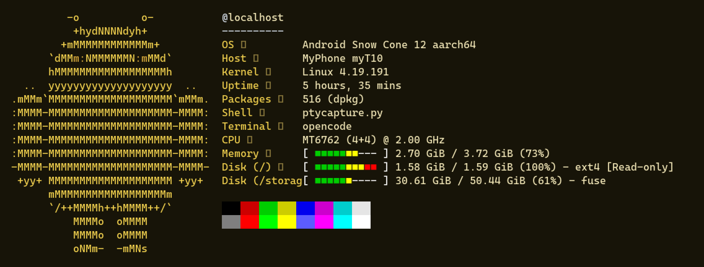
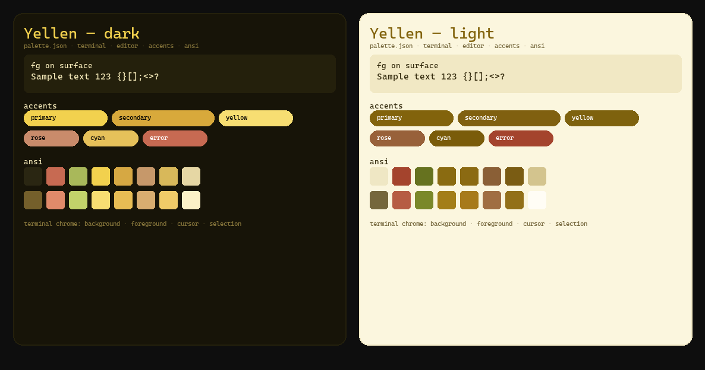

← Back to family hub

Themes · generated from one palette
Yellen
The golden-yellow branch of the family: one palette, two variants, and every terminal and editor port generated from it.

git clone https://github.com/Mark44928/Yellen.git
cd Yellen && bash install.sh

- 64 artifactsdark and light from one source
- Real appsTermux, Vim, Neovim, bat, tmux, Yazi
- Galleryoffline preview for every port
- Contrast checkedWCAG values regenerated